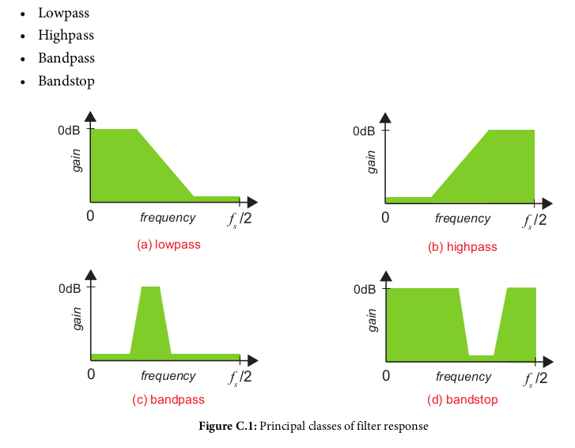
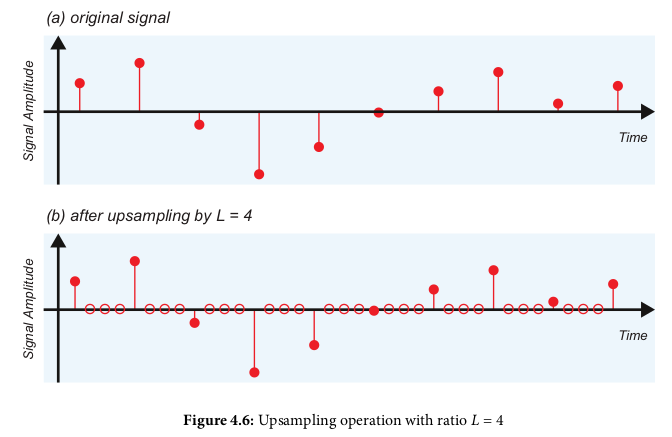
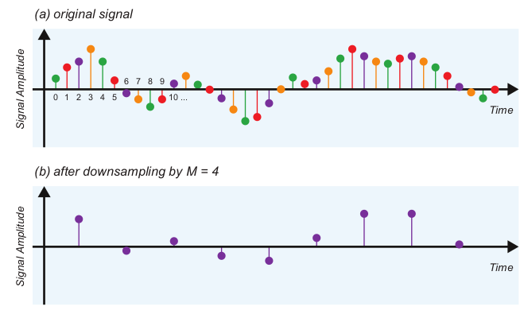
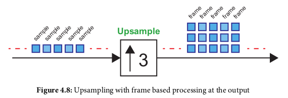

Can be defined in their own file without needing to be "included"; just need to be available in the MATLAB path
Format:
function return_result = function_name(arg1,arg2,...)
% Function Description summary
% function details
...
return_result = blah;
code to plot a sin and cos wave
% script to generate and plot sine and cosine waves
%% Generate Data
fs = 1000; % sampling frequency in Hz
f1 = 100; % frequency of sine and cosine waves in Hz
Tmax = 0.08; % duration of simulation time in seconds
Ts = 1/fs; % sample period (1/sample frequency)
t = [0:Ts:Tmax]; % an array of time values from 0 to Tmax, in steps of Ts
As = sin(2*pi*f1*t); % create array of sine samples
Ac = cos(2*pi*f1*t); % create array of cosine samples
%% Plot the data
figure(1); % create a new figure
hold off; % do not retain any previous plot data
% plot the sine wave data
% r = red, - = continuous line, o = round marker
plot(t,As,'r-o');
% save the previously plotted data
hold on
% same as above except with a blue line (b)
plot(t,Ac,'b-o');
% label the data
xlabel('Time (seconds)');
ylabel('Amplitude');
title('Sine and Cosine');
% plot legend
% location northeast means put the legend at the top right of the graph
% \pi = pi symbol
% _ = subcase
legend('sin(2\pif_1t)','cos(2\pif_1t)','location','Northeast');
% use a grid
grid on;
% args: [xmin xmax ymin ymax]
axis([0 max(t) -1.2 1.2]) % axis scaling
Objects are instantiated and new members added by declaring their name and internal data value:
% create the weather structure, and various fields within it
weather.days = [1 2 3 4 5 6 7 8 9 10];
weather.temperature = [11 10 14 17 18 17 15 16 18 20];
weather.rainfall = [6 3 5 0 1 0 2 8 3 2];
weather.wind = [12 9 8 4 2 5 8 7 8 6];
weather.linestyle = 'k-o';
% plot a figure, by referencing specific fields of the weather structure
figure(1)
hold off
plot(weather.days, weather.temperature, weather.linestyle);
xlabel('Days');
ylabel('Temperature (^oC)');
title('Temperature over the first ten days of the month');
grid on;
ones(1,10) % array of ones with 1 row and 10 columns
zeros(1,8) % array of zeros with 1 row and 8 columns
length(array) % returns the length of the input array
max(array) % max and min functions
min(array)
rand(1,10) % 10 random values in interval 0 to 1
rands_sixes = ((12*rand(1,10)) - 6) % 10 random values in range -6 to +6
transpose1 = transpose(array) % transpose input array
transpose2 = array' % also transpose input array
first_elem = my_array(1) % FIRST element (matlab is 1 index based, not 0!)
sub_ind = find(my_array < 0) % indices of elements < 0
sub_arr = my_array(sub_ind) % extract those elements
concat_arr = [arr1,arr2] % concatenates arr2 onto arr1 and stores the result in concat_arr
matrix1 = [1 2 3 4; 5 6 7 8; 9 10 11 12] % makes a 3x4 matrix
size(matrix1) % gets the dimensions of the matrix as an array (e.g. [3 4] in this case)
matrix3 = matrix1 + matrix2 % element wise addition
matrix3 = matrix1 - matrix2 % element wise subtraction
matrix3 = matrix1 .* matrix2 % element wise multiplication
matrix3 = matrix1 * matrix2 % matrix multiplication
matrix3 = matrix1' % transpose of matrix
matrix3 = transpose(matrix1) % also transpose
row1 = matrix3(1,:) % get the first row of the matrix
col1 = matrix3(:,1) % get the first col of the matrix
var1(1,1,:) = [1 2 3 4 5 6 7 8 9] % 1x1xN data
var2 = squeeze(var1) % remove the unnecessary dimension (var 2 is 9x1)
Restrict/Remove certain frequency types from a signal. Has a set of weights corresponding to the algorithm
Weights used in formula:
k = sample index, wn is weight at index n, x[k-n] is a previous input sample, N is the total number of filter weights
Set of weights W also called the 'impulse response'
In MATLAB:
% Create a low pass fir filter with N=50 weights, with a cutoff
% normalized frequency of 0.25 (i.e. 0.25*fs/2 Hz)
obj_filter = dsp.FIRFilter('Numerator', fir1(50, 0.25, 'low'));
% graphs the magnitude response of the created filter
fvtool(obj_filter);
x = randn(125,1);
y = step(obj_filter,x);
figure
grid on
hold on
xaxis = 1:100;
plot(xaxis,x(1:100),'r');
% result needs to start with a 25 sample delay due to there being 50 weights
plot(xaxis,y(26:125),'b');
Inserting zeros in between sample points. By a factor of L means inserting L-1 zeros between points
Selecting every Mth sample. Phase is important (your starting position) due to where your offset indices land (e.g 2,5,8,11 or 0,3,6,9 for M=3)
A frame is a group of consecutive samples. The frame rate is lower than the sample s used, since there are X samples per frame. Ex: if input sample rate of 1kHz upsampled by 3, the output sample rate would be 3 kHz, while the frame rate with 3 samples per frame would be 1kFrame/s. This can be done in simulink (convert samples to frames and frames to samples) via the 'buffer' block
